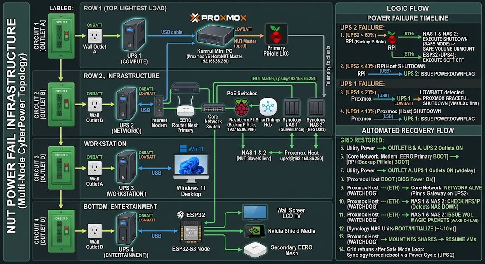

Configuring a Network Wide Power Fail Infrastructure using Network UPS Tool.
For a Network UPS Tools (NUT) deployment where the UPS is physically connected via USB, to the main Promox server you have two primary options within your Proxmox VE topology.
Because the UPS is a critical infrastructure component that dictates the shutdown sequence of your entire physical host (including all your VMs and LXCs), the ideal architecture is to install the NUT server directly on the Proxmox Host (PVE Host, 192.168.86.250).
UPS Direct Connection to the PVE Host Overview
In this configuration, the physical USB cable goes from the UPS into the Kamrui Mini PC, and the bare-metal Proxmox Debian layer handles the driver (usbhid-ups).
Why this is better than creating a new LxC:
Fail-Safe Shutdowns: If the battery runs critically low, the host has direct control to gracefully stop your LXCs/VMs and then safely power itself down. If the NUT server is inside a virtualized container and that container crashes or hangs, the host won't receive the shutdown signal.
Network Independence: If your internal virtual switch (vmbr0) or local routing encounters an issue during a power event, the host can still talk to the UPS locally over the USB bus without needing network layers to stay up just to read its own power status.
Server-Client Topology: The PVE host acts as the NUT Master (Server). It can then easily serve data across 192.168.86.0/24 to NUT Slaves (Clients) like your Home Assistant OS instance (VM 101) for dashboards and automations.
Strengths of This Design
Compute Isolation: Keeping Proxmox alone on UPS 1 eliminates heavy load draw (spinning drives, PoE switches), maximizing runtime so your core logic stays alive as a command node to coordinate everything else.
Circuit Segmentation: Spreading 4 UPS units across independent wall outlets prevents a sudden high-power draw (like a GPU spike on UPS 3) from tripping a breaker that takes down your network or server infrastructure.
Storage Protection: Enforcing a soft shutdown on the Synology NAS units at 60% battery preserves Btrfs/EXT4 file systems and prevents degraded RAID arrays or NFS stale-handle deadlocks.
Continuous Network Fabric: Network gear on UPS 2 remains powered long enough to let all remote nodes (Proxmox, Windows, ESP32, NAS) communicate telemetry until their final shutdown phase.
System Level Design

Architectural Weaknesses & Edge Cases
| CRITICAL OUTAGE RISKS (Edge Cases) | |
|---|---|
| Edge Case | Resulting System Vulnerability |
| 1. Synology "Safe Mode" Loop | NAS halts services/unmounts volumes but stays powered. If grid returns, NAS won't auto-reboot. |
| 2. Partial Outage / Bounce | RPi/NAS shut down at 60%, grid restores at 50%. Proxmox never hit 20%, so system is half-dead. |
| 3. Master-Client Dependency | Synology NAS 2 on UPS 2 relies on Proxmox on UPS 1 over Ethernet on UPS 2 to receive triggers. |
1. The Synology "Safe Mode" Hang (Grid Restored After NAS Shutdown)
Synology DSM by default enters Safe Mode (unmounts volumes and shuts down services to protect data) but leaves the motherboard powered on until the UPS physically cuts input power.
The Problem: If the grid returns after the NAS enters Safe Mode, but before UPS 2 dies completely, UPS 2 never power-cycles its outlets.
Result: The Synology units remain powered on in a permanently halted state. They will not reboot automatically when grid power normalizes until someone manually presses the physical power buttons.
2. The Power "Bounce" (Grid Restores Mid-Outage)
Suppose a storm drops utility power. UPS 2 drains to 60%, triggering the Synology NAS units and ESP32 to shut down. Then power comes back on while UPS 1 is still at 40% (meaning Proxmox never received its 20% shutdown threshold and stayed running).
The Problem: Proxmox never shut down, but its NFS storage backend (Synology NAS 2) did shut down.
Result: Proxmox VM storage drops offline, throwing I/O errors and corrupting running virtual machines because the host never rebooted to trigger storage re-initialization.
3. Cross-UPS Network Dependency (Split-Brain Risk)
Synology NAS units are plugged into UPS 2, but they monitor UPS 1 via Proxmox (192.168.86.250) over the network switch (powered by UPS 2).
- If UPS 2 fails prematurely (or its network switch fails), the Synology units lose connection to Proxmox. Without explicit deadtime watchdog settings in upsmon.conf, the Synology NAS units won't know whether power is fine or if Proxmox died, potentially missing their shutdown window.
Ideal Power-Up & Recovery Scenario
To make this setup self-healing, the reboot sequence must mirror the shutdown sequence in reverse, driven by hardware power-cycling.
IDEAL AUTOMATED RECOVERY SEQUENCE |
|---|
Key Automation Tweaks for Perfect Recovery:
Enable "Auto-Reboot when Power Restores" on Synology: In DSM → Control Panel → Hardware & Power, check "Restart automatically when power supply issue is fixed". Additionally, check "Shut down UPS when system enters Safe Mode". This forces Synology to tell UPS 2 to kill power to its outlets once Safe Mode is reached, ensuring a complete power cycle when grid power returns.
Configure BIOS AC Power Loss Settings: Set the Kamrui Mini PC (Proxmox), Raspberry Pi, and Win 11 PC BIOS setting State After G3 / AC Power Loss to Power On (or Last State).
Proxmox Storage Watchdog Script: Add an automated systemd timer on Proxmox that periodically pings/checks the Synology NFS share. If the NFS mount goes stale during a partial outage bounce, the watchdog script cleanly restarts Proxmox storage services or triggers a self-reboot once the NAS comes back online.
Since Proxmox (UPS 1) stays online during a partial outage where UPS 2 drops to 60% and shuts down the Synology units, Proxmox can act as an automated recovery orchestrator.
Because your Synology NAS units are in Safe Mode/halted while plugged into live power, they cannot turn themselves back on automatically. Proxmox can monitor their availability and issue Wake-on-LAN (WOL) magic packets over the restored network to wake them up without requiring a physical power cycle or button press.
How the Proxmox Recovery Watchdog Works
Proxmox runs a lightweight background script that continuously monitors your infrastructure state:
EDGE CASE AUTOMATED RECOVERY FLOW |
|---|
What Happens During the 5–10 Minute Boot Recovery?
Because Proxmox virtual machines might throw I/O errors if their underlying NFS storage disappears during the NAS reboot window, you can refine how Proxmox handles storage mounts:
Pause/Suspend VMs on NFS: When Proxmox detects the 60% trigger, have it suspend running NFS-dependent VMs to RAM rather than hard-stopping them.
Disable NFS Storage Plugin: Temporarily mark the Synology NFS storage as disabled in Proxmox (pvesm set <storage> --disable 1). This prevents Proxmox from locking up while waiting for stale NFS socket timeouts.
Re-Enable Post-WOL: Once the script sends the WOL packet and sleeps for the 5–10 minute boot duration, it re-enables the storage (pvesm set <storage> --disable 0), mounts the NFS shares cleanly, and resumes the paused VMs.
Textual and Structural Layout
The complete textual and structural layout of your multi-UPS infrastructure.
This design separates your core computing layer (Proxmox) from your network and storage dependencies, ensuring your infrastructure stays alive and manageable for as long as possible during a power event.
🏢 UPS 1: The Compute Layer
Dedicated to: Proxmox VE Host (Kamrui Mini PC)
Physical Data Link: A USB communication cable connects directly from UPS 1 into a USB port on the Proxmox Host.
Role: This UPS only powers the low-draw Mini PC. Because it isn't burdened by spinning hard drives or power-hungry PoE cameras, it provides a maximum runtime buffer for the Proxmox host to execute its network watchdog scripts and manage the system shutdown.
Control Signaling:
The Proxmox Host runs the NUT Master (Server) daemon, monitoring the battery status of UPS 1 over the USB connection.
It shares this power status out over the local network via Ethernet at 192.168.86.250.
🌐 UPS 2: The Infrastructure, Storage & Network Layer
Dedicated to: All supporting equipment and network appliances.
Power Connections:
Internet Modem (Plugged into the SmartThings Z-Wave Smart Plug ──► UPS 2 Battery Outlets)
Wi-Fi Router / EERO Nest Primary Node
Core Network Switch
PoE Network Switches (Powering IP surveillance cameras)
Synology NAS 1 (Surveillance Station storage)
Synology NAS 2 (NFS/Data storage)
SmartThings Hub
Raspberry Pi (Backup Pi-hole)
Role: Keeps your entire local network fabric, Wi-Fi mesh, smart home mesh, and data storage fully active.
Control Signaling:
The Synology NAS units are configured as NUT Secondary (Slave) clients.
They continuously poll the Proxmox Host (192.168.86.250) over the local Ethernet network.
Even though they are plugged into UPS 2 for power, they listen to the battery thresholds and shutdown triggers broadcast by Proxmox. When the designated threshold is reached (e.g., UPS 2 charge drops to 60%), the Synologies execute their countdown to enter Safe Mode, saving their disk volumes from corruption long
🖥️ UPS 3: The Workstation Layer
Dedicated to: Windows 11 Desktop
Physical Data Link: A direct USB communication cable connects UPS 3 to a USB port on the Windows 11 PC.
Role: Powers your primary workstation independently. Isolating the desktop onto its own outlet and battery prevents high-power components (like GPU power spikes) from draining or tripping the core infrastructure battery banks.
Control Signaling:
Runs WinNUT-Client (or local CyberPower PowerPanel / NUT Windows service) locally over USB.
Operates as an isolated node that triggers a graceful Windows shutdown when UPS 3 battery runtime drops below safety thresholds, or listes for network heartbeat signals from Proxmox.
📺 UPS 4: The Entertainment Layer
Dedicated to: Main Living Room TV, Nvidia Shield, and Secondary Mesh Network
Power Connections:
Wall Screen LCD TV
Nvidia Shield Media Player
Secondary EERO Mesh Router Node
Physical Data Link: A USB communication cable connects directly into an ESP32-S3 Microcontroller running an embedded NUT daemon / custom USB host code.
Role: Keeps your streaming media and secondary Wi-Fi mesh node online through short flickers and brownouts without risking filesystem loss on storage servers.
Control Signaling:
The ESP32 Node acts as a lightweight network telemetry server over Wi-Fi, streaming battery health metrics to Home Assistant or Proxmox via MQTT / HTTP sockets.
When UPS 2 broadcasts a 60% battery threshold signal across the network, the ESP32 receives the trigger to cleanly shut down media sessions or signal power-down events to connected home entertainment gear.
🔀 Physical Data & Network Topology Map
========================= INDEPENDENT CIRCUIT & TELEMETRY
MATRIX ========================= |
|---|
Tiered Outage Execution Timeline
| Trigger | Monitoring Node | Targets | Automated Action |
|---|---|---|---|
| UPS 2 @ 60% | Raspberry Pi (Backup Pi-hole) | Both Synology NAS units | Triggers graceful volume unmount and system halt via upsc / upsmon network signals. |
| UPS 2 @ 60% | Raspberry Pi (Backup Pi-hole) | ESP32 Node (UPS 4) | Sends custom network payload to ESP32 to trigger optional soft-shutdown on TV/Shield node. |
| UPS 2 @ 40% | Raspberry Pi (Backup Pi-hole) | RPi Host & UPS 4 hardware | Initiates OS shutdown for the Raspberry Pi itself; sends final power-off signal to UPS 4. |
| UPS 1 @ 20% | Proxmox Host (192.168.86.250) | Kamrui Mini PC & VMs | Triggers graceful guest VM/LXC shutdowns followed by Proxmox host OS shutdown. |
| UPS 1 @ 10% | Proxmox Host (192.168.86.250) | UPS 1 Hardware | Issue upsdrvctl shutdown / load.off command to kill output outlets and preserve battery safety margin. |
Final setup procedures
Here is the step-by-step setup guide to implement your 4-UPS architecture, percentage-based shutdown triggers, Wake-on-LAN recovery, and client node configurations.
1. Proxmox Host Configuration (UPS 1 — Primary NUT Server)
The Kamrui Mini PC monitors UPS 1 via USB host and acts as the central upsd server (192.168.86.250) for remote clients.
Step 1.1: Install NUT Packages
Run the following in the Proxmox shell:
Bash |
|---|
Step 1.2: Configure NUT Mode (/etc/nut/nut.conf)
Set NUT to operate as a netserver:
Ini, TOML |
|---|
Step 1.3: Define UPS Driver (/etc/nut/ups.conf)
Add the CyberPower configuration with forced low-battery overrides:
Ini, TOML |
|---|
Step 1.4: Bind Network Daemon (/etc/nut/upsd.conf)
Listen on all interfaces (or specifically 192.168.86.250):
Ini, TOML |
|---|
Step 1.5: Define NUT Users (/etc/nut/upsd.users)
Configure authentication credentials for remote clients:
Ini, TOML |
|---|
Step 1.6: Configure Local Monitor (/etc/nut/upsmon.conf)
Edit the /etc/nut/upsmon.conf with the following contents.
Ini, TOML |
|---|
Step 1.7: Enable and Start Services
Execute the following commands on the Promox Console.
Bash |
|---|
2. Raspberry Pi Configuration (UPS 2 — Backup Pi-hole & Infrastructure Monitor)
The Raspberry Pi monitors UPS 2 directly via USB and executes the 60% and 40% threshold triggers.
Step 2.1: Install NUT Packages
Run the following on the Raspberry Pi.
Bash |
|---|
Step 2.2: Configure NUT (/etc/nut/ups.conf & /etc/nut/nut.conf)
Edit the /etc/nut/ups.conf & /etc/nut/nut.conf and restart the daemon as follows:
In /etc/nut/nut.conf: |
|---|
Step 2.3: Create Percentage Monitoring Script (/usr/local/bin/ups2_monitor.sh)
Create the custom trigger script:
Bash |
|---|
Step 2.4: Automate Execution via Cron
Add to /etc/crontab:
Code snippet |
|---|
3. Synology NAS Configurations (UPS 2 — Network Clients)
Configure both NAS units to connect to NUT server signals and process Safe Mode commands cleanly.
Step 3.1: Enable Network UPS Client in DSM
Log in to DSM on both NAS units.
Go to Control Panel → Hardware & Power → UPS.
Check Enable UPS support.
Select Synology UPS Server or Network NUT Server.
Set Network UPS Server IP address:
Point to 192.168.86.250 (Proxmox) or 192.168.86.W (Raspberry Pi UPS 2 server).
Set Time before Synology NAS enters Safe Mode: Choose Customize time (e.g., 2 minutes) or set it to respond to low battery signals.
Step 3.2: Enable Wake-on-LAN (WOL)
Go to Control Panel → Hardware & Power → General.
Under Power Recovery, check Enable Wake on LAN (WOL).
Check Restart automatically when power supply issue is fixed.
Note the Ethernet MAC Addresses (found under Control Panel → Info Center → Network).
4. Proxmox Automatic Recovery Watchdog Setup
This script runs on Proxmox (UPS 1) to wake up the Synology NAS units via Wake-on-LAN if UPS 1 never failed, but UPS 2 dropped to 60% and restored power.
Step 4.1: Create Recovery Script (/usr/local/bin/synology-recovery.sh)
Edit the file /usr/local/bin/synology-recovery.sh and make it executable
Bash |
|---|
Bash
Step 4.2: Add Cron Job on Proxmox
Add to /etc/crontab on Proxmox:
Code snippet |
|---|
5. Windows 11 Workstation (UPS 3 — Independent Node)
Step 5.1: Install WinNUT-Client
Download and install WinNUT-Client (or CyberPower PowerPanel Personal).
Open WinNUT-Client configuration.
Step 5.2: Configure Connection Parameters
UPS Name: ups3 (or cyberpower)
NUT Server IP: 127.0.0.1 (if USB is monitored via local WinNUT runner) or 192.168.86.250 (if monitoring central signals).
Port: 3493
Step 5.3: Set Shutdown Conditions
- Select Shutdown System on ONBATT + LOWBATT or set battery runtime remaining to < 5 minutes.
6. ESP32-S3 Node Configuration (UPS 4 — Entertainment Layer)
The ESP32 reads battery data over USB Host or Serial and reports telemetry to Home Assistant or Proxmox via Wi-Fi.
Step 6.1: ESPHome / Custom Firmware Setup (ups4.yaml)
If using ESPHome with USB Host HID / Serial component:
YAML |
|---|
Operational Validation Checklist
Verify Proxmox Server Status: Run upsc ups1@localhost on Proxmox to ensure battery telemetry is broadcasting properly.
Verify Network Client Connectivity: From the Raspberry Pi, run upsc ups1@192.168.86.250 to confirm cross-network socket connectivity.
Simulate Power Outage: Unplug Outlet 2 (Network UPS). Verify that:
The Raspberry Pi detects the drop.
At 60% battery, Synology units receive the safe mode command.
Restoring power to Outlet 2 causes Proxmox to automatically issue Wake-on-LAN packets and resume normal operation.